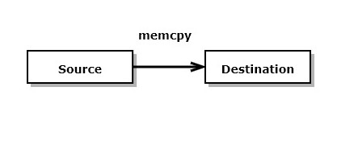
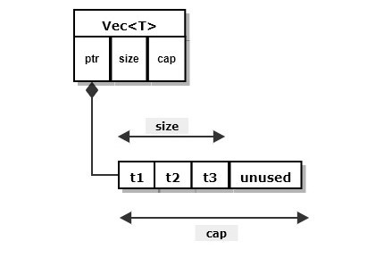

| Topic | Description | Diagram |
|
Copy type
|
Construction and assignment implicitly copies contents of source to destination.
- contiguous memory, satisfies Copy trait
-
examples: primitive types like i8, i16, .., u8, u16, .., f32, f64, &str, immut refs, ..
-
constr: let x = y; assign: x = y; // copies
|

|
|
Move type
|
Construction and assignment implicitly moves resources of source to destination.
- non-contiguous memory, does not implement Copy trait
-
examples:
Vec<T>, String, aggregate types holding at least one move type, mut refs,
many user defined types
-
constr: let x = y; assign: x = y; // moves
y invalid after operation
|

|
|
Clone type
|
Construction and assignment explicitly copies resources of source to destination.
-
examples: Vec<T>, String, many user defined types
-
constr: let x = y.clone(); assign: x = y.clone();
y valid after operation
|

|
|
Reference type
|
Pointer to instance of some type with special rules:
-
must be initialized when declared: let r = &u, let mr = &mut v
-
references cannot concurrently share mutation of referend
-
lifetime is scoped based, from the point of declaration to the end of that scope
-
The rules above are basis for Rust's memory safety. There are a few more details
explained in Safety
-
All other pointer types must reside in unsafe { ... }
Goal: never use unsafe in code you write. Let the std library types do any
required unsafe processing. They have been written by the Rust team and are
thoroughly vetted and wrapped in a safe interface.
|

|
|
Vec<T>
|
Collection of instances of type T residing in contiguous heap memory.
-
consists of control block in stack holding pointer to array of T in heap
-
reallocates heap memory to accept new instance when capacity is full
-
create vector:
let v = Vec::<int>::new();
let w: Vec<T> = vec![t1, t2, t3];
-
v and w are dropped, returning resources, when they go out of scope.
|

|
|
String
|
Collection of utf-8 characters residing in contiguous heap memory.
-
consists of control block in stack holding ptr to contiguous heap memory allocation.
-
a utf-8 character may occupy from 1 to 4 bytes, allowing a large collection of
language sets, e.g., ASCII, Unicode, Kanji, Arabic, ...
-
The item above means that Rust std::String instances cannot be indexed. There is a
string iterator, called chars(), that understands byte sequences that define
utf-8 character boundaries.
let s = String::from("a literal string");
let c2 = s.chars().nth(4).unwrap();
-
reallocates heap memory to accept new character(s) when capacity is full
-
create String:
let s = String::new();
let t = String::from("a string");
-
s and t are dropped, returning resources, when they go out of scope.
|
|
|
str
|
str is a copy type that represents a literal string in contiguous block of memory
-
converting between str and String:
let s = "an ordered collection of utf-8 characters";
let t = String::from(s);
let u = &S;
-
Literal strings are almost always used via a reference, e.g., &s
-
Sample code in Rust Playground:
copy demo
|

|
|
Box<T>
|
Box is a smart pointer to an instance of type T on the heap.
-
Box is the only safe way to allocate an instance in the heap
-
let s = String::from("string in heap");
let x = Box::new(s); // moves s into Box
-
a Box is dropped to release its resource when it goes out of scope
-
a Box instance is implicitly dereferenced to provide the interface of its
inner instance
|

|